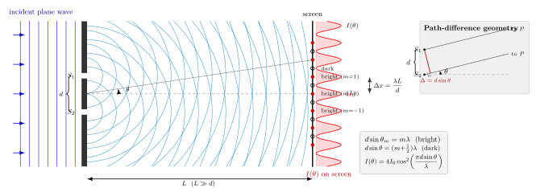

两束光为什么能叠加出黑暗?
把手电筒的光束叠加到墙上, 你从没见过叠加以后某处突然变黑. 日常经验告诉我们: 光是"量", 两份光就该是两份亮. 这符合能量守恒的朴素版本, 也符合牛顿时代"光是粒子流"的画面 — 两股沙子落到同一个筛子上, 格子里的沙只会更多, 不会消失.
但 1801 年, 一位叫 Thomas Young 的英国医生兼语言学家, 用两条细缝和一块屏幕, 把这个朴素画面击得粉碎. 在他实验装置的屏上, 他看到了明暗相间的条纹 — 有些位置, 两束光合起来反而比一束光还暗, 甚至几乎全黑. 这就是干涉. 干涉不是光"抵消了能量", 而是相位的代数在重新分配能量. 本节的任务, 是把这句话拆成公式.
上一节我们从 Huygens-Fresnel 原理里看到了次级子波如何复合出传播的波前; 那套机制里, 每一个子波都要带上自己的相位. 当只有一个光源、一个波前在前进时, 相位被整体挪动, 看不出什么特别. 而一旦我们把一个波前在空间上"劈成两份", 让它们绕着不同的路径到达同一点, 两段相位差就会赤裸裸地出现 — 相长则亮, 相消则暗.
一、两束相干光的叠加: 相位的代数
考虑屏上某一点 $P$, 它同时收到来自缝 $S_1$ 和 $S_2$ 的光. 若两缝由同一个平面波前激发, 两束光具有锁定的初相位 (这就是"相干"的含义), 我们可以把 $P$ 处的电场写成两列单色波之和:
$$ E_P = E_0\cos(kr_1-\omega t) + E_0\cos(kr_2-\omega t),\tag{1} $$
这里 $r_1$, $r_2$ 分别是从 $S_1$, $S_2$ 到 $P$ 的路径长度, $k=2\pi/\lambda$ 是波数, $\omega$ 是角频率. 和差化积一下:
$$ E_P = 2E_0\cos\!\Big(\frac{k(r_2-r_1)}{2}\Big)\cos\!\Big(\frac{k(r_1+r_2)}{2}-\omega t\Big). $$
右边的第二个因子是以 $\omega$ 振荡的"载波", 真正决定条纹的, 是第一个因子 $2E_0\cos(k\Delta/2)$, 其中 $\Delta\equiv r_2-r_1$ 是路径差. 光强 $I\propto\langle E^2\rangle$ 对时间求平均, 正弦平方的时间平均是 $1/2$, 于是
$$ I(P) = 4I_0\cos^2\!\Big(\frac{k\Delta}{2}\Big)=4I_0\cos^2\!\Big(\frac{\pi\Delta}{\lambda}\Big),\tag{2} $$
其中 $I_0$ 是单缝在 $P$ 点产生的强度. 这是整节的中心公式. 它告诉我们三件事:
- 当 $\Delta = m\lambda$ (整数倍波长), $\cos^2$ 等于 1, $I=4I_0$ — 这是"相长", 比单独一束亮四倍;
- 当 $\Delta = (m+1/2)\lambda$ (半整数倍波长), $\cos^2$ 等于 0, $I=0$ — 这是"相消", 完全黑暗;
- 在远场里 $\Delta$ 随屏上位置连续变化, 所以屏上会出现连续的亮暗过渡, 即条纹.
请注意"相消"这一行. 两束"每束 $I_0$ 的光"相遇, 一处变成了 0. 能量没有凭空消失 — 它被重新分配到了亮条纹处的 $4I_0$. 把整条屏上的 $I(\theta)$ 对角度积分, 平均仍是 $2I_0$, 与"两束独立光叠加"的直觉相同, 总能量守恒. 只是在空间上, 能量不再均匀摊开, 而是挤成了一道道亮线.
二、路径差 $d\sin\theta$: 把公式接到几何上
公式 (2) 里的 $\Delta$ 要换成几何量才能画图. 设两缝相距 $d$, 屏距 $L\gg d$ (这是杨氏实验的关键近似, 叫"远场"). 从两缝发出的光到屏上一点, 连线几乎平行, 夹角同为 $\theta$. 两条路径在靠近缝的一侧相差一个小直角三角形的直角边 $d\sin\theta$:
$$ \Delta = d\sin\theta. $$
代入 (2) 就得到我们熟悉的角分布
$$ I(\theta) = 4I_0\cos^2\!\Big(\frac{\pi d\sin\theta}{\lambda}\Big). $$
明纹条件因此写成
$$ d\sin\theta_m = m\lambda,\quad m=0,\pm1,\pm2,\ldots $$
暗纹则在
$$ d\sin\theta = (m+\tfrac{1}{2})\lambda. $$
进一步, 当 $\theta$ 很小, $\sin\theta\approx\tan\theta = x/L$ ($x$ 是屏上离中心的距离), 相邻明纹之差是一个波长的路径差, 对应的屏上位移就是条纹间距
$$ \Delta x = \frac{\lambda L}{d}.\tag{3} $$
这条公式的美在于: 左边是我们在屏上用毫米尺量出来的距离, 右边是波长 $\lambda$, 装置参数 $L$, $d$. 三者一乘一除, 就把几百纳米的微观尺度"放大"到毫米级的宏观尺度. Young 一百多年前能把光的波长"量出来", 全靠这个放大镜.

三、代入真实数字: 毫米尺上看纳米波长
我们取一组教科书常用的数字: 缝距 $d = 1\,\text{mm} = 10^{-3}\,\text{m}$, 波长 $\lambda = 500\,\text{nm} = 5\times 10^{-7}\,\text{m}$ (绿光), 屏距 $L = 1\,\text{m}$. 代进 (3):
$$ \Delta x = \frac{\lambda L}{d} = \frac{5\times 10^{-7}\cdot 1}{10^{-3}} = 5\times 10^{-4}\,\text{m} = 0.5\,\text{mm}. $$
也就是说, 相邻两条亮纹在屏上相距只有半毫米. 半毫米在肉眼观察范围的下限, 所以 Young 当年做实验, 不是在黑板上做, 而是在一个半暗的房间里, 对着一张白纸, 甚至要凑得很近才看得清. 这是"把纳米量级的波长, 用 $L/d$ 放大 2000 倍到毫米量级"的技术成功.
换一组数字感受一下依赖关系. 若我们把缝距 $d$ 减到 $0.1\,\text{mm}$, 其他不变, 条纹间距变成 $5\,\text{mm}$, 一眼就能数出来. 若把 $d$ 放大到 $1\,\text{cm}$, 同样 $L=1\,\text{m}$, 条纹间距缩到 $50\,\mu\text{m}$, 肉眼几乎看不见了 — 你会以为光在屏上是"均匀亮"的. 这解释了我们在阳台上把两个路灯叠在白墙上从未见过条纹: 两个灯相距几米, 条纹间距小到纳米级, 再加上两个灯还不相干 (下面会讲), 干涉条纹被彻底抹平.
再算一次明纹的角位置. 同样 $d=1\,\text{mm}$, $\lambda = 500\,\text{nm}$, 一级明纹 ($m=1$) 在
$$ \sin\theta_1 = \frac{\lambda}{d} = \frac{5\times 10^{-7}}{10^{-3}} = 5\times 10^{-4}, $$
$\theta_1 \approx 0.029^\circ$. 一级明纹相对中央偏离不到三百分之一度, 但在 $1\,\text{m}$ 外的屏上就是 $0.5\,\text{mm}$. 实验室里的干涉仪, 基本就生活在这种"角度很小但横向位移合适"的区间里.
四、极限检验与相干性: 两道看门的闸
极限最能暴露公式的灵魂. 让我们对干涉公式做两次极限检验.
极限 1: 堵住一条缝. 只剩一条缝, 这等价于 $d\to 0$ 吗? 不是 — "堵上一条"不是"两条变一条", 而是两源变成一源. 公式 (1) 的两项里有一项消失, $I_P = I_0$, 屏上不再有条纹, 只有单缝的衍射分布 (下一节会讲). 实验里, 用一只手指把一条缝挡上, 条纹立刻消失, 亮纹处的 $4I_0$ 下降到 $I_0$, 暗纹处的 $0$ 上升到 $I_0$, 整条屏变成一个柔和的亮斑. 这是"干涉是两源之间的事" 最朴素的证据: 没有第二束光, 也就没有相位的代数可做.
极限 2: $\lambda\to 0$. 条纹间距 $\lambda L/d\to 0$, 条纹密到无限细 — 在任何实际分辨率下, 你只会测量到一个模糊的 $2I_0$, 即两束光独立相加. 这就是几何光学的极限: 波长远小于几何尺度时, 干涉效应在分辨率尺度上被平均掉, 光看起来就"回到"了粒子式的行为. Newton 之所以能一生坚信"光是粒子", 部分就是因为他的光学仪器达不到能看清条纹的精度.
相干性. 公式 (1) 隐含了一个默认: 两缝后发出的光有固定的相位差. 但大多数光源 — 白炽灯、太阳 — 发出的光并不"相位锁定": 每个原子独立辐射一小段波列, 波列长度不过几米、波列之间相位随机. 你把白炽灯的光直接劈成两份送去两缝, 两缝的相位差每隔 $10^{-8}$ 秒就重新抽一次随机数, 时间平均后干涉项消失, 条纹模糊为均匀亮斑. Young 当年的手法, 是让阳光先穿过一个极小的 单缝, 再投到双缝上 — 单缝相当于一个"空间滤波器", 从空间相干性上把波前修整到足够窄的区域, 使得双缝后两源有确定的相位关系. 这也是为什么激光出现以后, 双缝实验变得轻松 — 激光的时间相干长度能达到几米乃至几公里, 直接照双缝就能得到清晰条纹.
历史 · Young 1801. Thomas Young 在 1801 年的那次报告, 是光学史上的一记惊雷. 在他之前, 牛顿的粒子说在英国是近乎神圣的正统 — 《光学》一书讨论光的色散、偏振, 用的是"光小球"的语言. Young 用一个近乎玩具的装置 (一小片黑卡纸、两条针尖划的细缝、一张白纸), 演示了两束光可以"叠出黑暗"这种只属于波的行为. 报告最初在英国本土并未被广泛接受 — 舆论把他讽刺为"反牛顿"的异端. 真正让波动说翻盘的是十几年后 Fresnel 的理论和 Arago 的"泊松亮斑"实验 (上一节讲过). 但回过头看, Young 的双缝永远是"光是波"最干净、最容易复现、最容易讲清楚的一个证据. 今天任何一所大学的普物实验, 都能在一个午后把这个 1801 年的发现重做一次, 而得到的条纹间距与公式 (3) 对得分毫不差.
小结
本节回答了"两束光为什么能叠出黑暗"这个反直觉的问题: 叠加的是振幅, 不是强度, 而振幅的加法由相位支配; 两条路径之差 $d\sin\theta$ 以波长 $\lambda$ 为单位量化相位差, 于是屏上出现 $4I_0\cos^2(\pi d\sin\theta/\lambda)$ 的明暗条纹, 亮纹更亮、暗纹归零, 能量守恒在空间重新分配. 双缝干涉是判定"光是波"的黄金实验 — 堵一缝则条纹消失, $\lambda\to 0$ 则条纹密到不可分辨, 把 Young 1801 年的突破钉成了光波动说的一块基石. 沿着这条思路往前一步: 若把"两条缝"改成"一条有限宽度的缝", 屏上又会出现什么? 这就是下一节要处理的单缝衍射 — 无穷多相干子源的积分.
▲